Iozone results for reread, data are arranged by block size
- Baseline data set
- ./ext4/ext4_1.iozone
- ./ext4/ext4_2.iozone
- ./ext4/ext4_3.iozone
- ./ext4/ext4_4.iozone
- ./ext4/ext4_5.iozone
- Investigated data set
- ./xfs/xfs1.iozone
- ./xfs/xfs2.iozone
- ./xfs/xfs3.iozone
- ./xfs/xfs4.iozone
- ./xfs/xfs5.iozone
mean => Arithmetic mean
standar dev. => Sample standard deviation
ci. max 90%, ci.min => confidence interval at confidence level 90% => it means that mean value of the distribution lies with 90% propability in interval ci_min-ci_max
geom. mean => Geometric mean
median => Second quartile = cuts data set in half = 50th percentile
first quartile => cuts off lowest 25% of data = 25th percentile
third quartile => cuts off highest 25% of data, or lowest 75% = 75th percentile
minimum => Lowest value of data set
maximum => Hightest value of data set
baseline set1 difference => Difference of medians of both sets in percennt. Arithmetic means are used in detail mode instead.
ttest p-value => Student's t-test p-value = probability the both data sets are equal
ttest equality => If p-value is higher than 0.1, data sets are considered being equal with 90% probability. Otherwise the data sets are considered being different.
Linear regression of all results regression line is in y = ax form, b coeficient is zero.
for details about operations performed see Iozone documentation
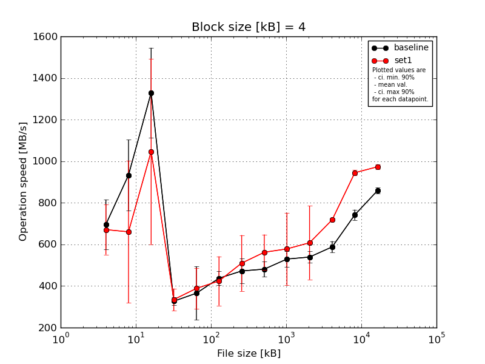
|
Block size [kB] |
File size [kB] |
| 4 |
8 |
16 |
32 |
64 |
128 |
256 |
512 |
1024 |
2048 |
4096 |
8192 |
16384 |
| baseline | 4 | 787.48 | 1099.39 | 1430.74 | 351.58 | 452.9 | 478.89 | 436.21 | 536.38 | 509.71 | 588.6 | 619.87 | 761.53 | 880.81 |
| 4 | 787.48 | 969.3 | 925.58 | 322.2 | 405.92 | 381.08 | 386.96 | 498.51 | 505.78 | 515.85 | 586.0 | 746.47 | 856.48 |
| 4 | 568.78 | 1099.39 | 1430.74 | 339.74 | 456.06 | 448.18 | 551.65 | 477.95 | 492.13 | 527.56 | 606.71 | 727.47 | 859.11 |
| 4 | 549.69 | 715.37 | 1430.74 | 318.29 | 130.69 | 451.27 | 487.3 | 459.92 | 588.94 | 531.07 | 544.13 | 769.74 | 857.68 |
| 4 | 787.48 | 783.82 | 1430.74 | 302.84 | 381.13 | 428.06 | 499.13 | 432.87 | 551.32 | 532.75 | 584.03 | 705.42 | 837.78 |
| mean val. |
696.18 |
933.45 |
1329.71 |
326.93 |
365.34 |
437.49 |
472.25 |
481.13 |
529.57 |
539.16 |
588.15 |
742.13 |
858.37 |
| standard dev. |
125.2 |
177.7 |
225.92 |
19.03 |
134.96 |
36.36 |
62.9 |
39.19 |
39.87 |
28.41 |
28.76 |
26.08 |
15.26 |
| ci. min. 90% |
576.82 |
764.04 |
1114.32 |
308.78 |
236.67 |
402.83 |
412.28 |
443.76 |
491.56 |
512.08 |
560.73 |
717.26 |
843.82 |
| ci. max 90% |
815.54 |
1102.87 |
1545.09 |
345.07 |
494.01 |
472.16 |
532.22 |
518.49 |
567.59 |
566.25 |
615.57 |
766.99 |
872.93 |
| geom. mean |
686.68 |
919.39 |
1311.39 |
326.49 |
334.32 |
436.24 |
468.82 |
479.86 |
528.4 |
538.59 |
587.58 |
741.76 |
858.26 |
| median |
787.48 |
969.3 |
1430.74 |
322.2 |
405.92 |
448.18 |
487.3 |
477.95 |
509.71 |
531.07 |
586.0 |
746.47 |
857.68 |
| first quartile |
568.78 |
783.82 |
1430.74 |
318.29 |
381.13 |
428.06 |
436.21 |
459.92 |
505.78 |
527.56 |
584.03 |
727.47 |
856.48 |
| third quartile |
787.48 |
1099.39 |
1430.74 |
339.74 |
452.9 |
451.27 |
499.13 |
498.51 |
551.32 |
532.75 |
606.71 |
761.53 |
859.11 |
| minimum |
549.69 |
715.37 |
925.58 |
302.84 |
130.69 |
381.08 |
386.96 |
432.87 |
492.13 |
515.85 |
544.13 |
705.42 |
837.78 |
| maximum |
787.48 |
1099.39 |
1430.74 |
351.58 |
456.06 |
478.89 |
551.65 |
536.38 |
588.94 |
588.6 |
619.87 |
769.74 |
880.81 |
| set1 | 4 | 660.49 | 969.3 | 1289.93 | 376.85 | 504.31 | 622.07 | 739.58 | 716.29 | 902.43 | 938.45 | 717.1 | 969.59 | 988.93 |
| 4 | 787.48 | 700.08 | 1430.74 | 240.58 | 413.6 | 466.53 | 359.25 | 533.11 | 507.67 | 522.6 | 716.86 | 934.04 | 964.83 |
| 4 | 787.48 | 866.75 | 285.18 | 368.38 | 346.84 | 317.98 | 449.49 | 527.88 | 498.21 | 553.56 | 711.75 | 939.06 | 985.16 |
| 4 | 484.65 | 51.06 | 1315.83 | 328.66 | 442.96 | 367.71 | 516.59 | 550.61 | 520.33 | 516.42 | 719.44 | 938.2 | 963.32 |
| 4 | 634.9 | 715.37 | 912.68 | 359.29 | 234.1 | 347.03 | 485.27 | 483.13 | 463.37 | 508.9 | 726.61 | 941.83 | 963.39 |
| mean val. |
671.0 |
660.51 |
1046.87 |
334.75 |
388.36 |
424.26 |
510.03 |
562.2 |
578.4 |
607.98 |
718.35 |
944.54 |
973.13 |
| standard dev. |
125.77 |
358.43 |
468.23 |
55.7 |
103.18 |
123.87 |
141.2 |
89.66 |
182.37 |
185.51 |
5.4 |
14.28 |
12.79 |
| ci. min. 90% |
551.09 |
318.79 |
600.47 |
281.65 |
289.99 |
306.17 |
375.42 |
476.72 |
404.53 |
431.12 |
713.2 |
930.93 |
960.94 |
| ci. max 90% |
790.91 |
1002.24 |
1493.28 |
387.86 |
486.73 |
542.36 |
644.65 |
647.68 |
752.27 |
784.85 |
723.5 |
958.16 |
985.32 |
| geom. mean |
660.84 |
463.89 |
912.33 |
330.51 |
375.87 |
411.34 |
495.73 |
557.02 |
559.92 |
589.76 |
718.34 |
944.46 |
973.06 |
| median |
660.49 |
715.37 |
1289.93 |
359.29 |
413.6 |
367.71 |
485.27 |
533.11 |
507.67 |
522.6 |
717.1 |
939.06 |
964.83 |
| first quartile |
634.9 |
700.08 |
912.68 |
328.66 |
346.84 |
347.03 |
449.49 |
527.88 |
498.21 |
516.42 |
716.86 |
938.2 |
963.39 |
| third quartile |
787.48 |
866.75 |
1315.83 |
368.38 |
442.96 |
466.53 |
516.59 |
550.61 |
520.33 |
553.56 |
719.44 |
941.83 |
985.16 |
| minimum |
484.65 |
51.06 |
285.18 |
240.58 |
234.1 |
317.98 |
359.25 |
483.13 |
463.37 |
508.9 |
711.75 |
934.04 |
963.32 |
| maximum |
787.48 |
969.3 |
1430.74 |
376.85 |
504.31 |
622.07 |
739.58 |
716.29 |
902.43 |
938.45 |
726.61 |
969.59 |
988.93 |
| baseline set1 difference |
-3.62 % |
-29.24 % |
-21.27 % |
2.39 % |
6.3 % |
-3.02 % |
8.0 % |
16.85 % |
9.22 % |
12.76 % |
22.14 % |
27.28 % |
13.37 % |
| ttest p-value |
0.7591 |
0.1656 |
0.2585 |
0.7738 |
0.7696 |
0.8245 |
0.5996 |
0.1011 |
0.5747 |
0.436 |
0.0 |
0.0 |
0.0 |
| ttest equality |
SAME |
SAME |
SAME |
SAME |
SAME |
SAME |
SAME |
SAME |
SAME |
SAME |
DIFF |
DIFF |
DIFF |
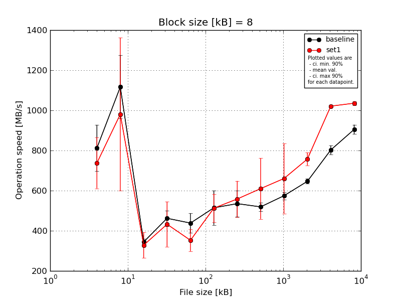
|
Block size [kB] |
File size [kB] |
| 8 |
16 |
32 |
64 |
128 |
256 |
512 |
1024 |
2048 |
4096 |
8192 |
16384 |
| baseline | 8 | 765.5 | 1400.17 | 355.4 | 529.79 | 463.23 | 407.88 | 595.31 | 546.15 | 598.98 | 668.66 | 842.83 | 937.81 |
| 8 | 715.37 | 980.99 | 322.2 | 434.15 | 462.82 | 429.6 | 480.25 | 490.23 | 556.8 | 641.85 | 800.63 | 894.61 |
| 8 | 998.85 | 1114.45 | 364.29 | 459.25 | 482.86 | 589.48 | 497.57 | 532.76 | 568.5 | 646.72 | 786.85 | 913.45 |
| 8 | 715.37 | 1043.47 | 343.29 | 427.78 | 429.46 | 545.62 | 623.45 | 509.46 | 557.72 | 635.72 | 798.08 | 870.89 |
| 8 | 866.75 | 1043.47 | 336.25 | 460.06 | 353.1 | 599.59 | 479.37 | 516.74 | 591.17 | 639.4 | 785.25 | 908.94 |
| mean val. |
812.37 |
1116.51 |
344.28 |
462.21 |
438.29 |
514.44 |
535.19 |
519.07 |
574.63 |
646.47 |
802.73 |
905.14 |
| standard dev. |
121.19 |
165.46 |
16.41 |
40.48 |
51.34 |
90.01 |
68.83 |
21.51 |
19.42 |
13.03 |
23.41 |
24.67 |
| ci. min. 90% |
696.83 |
958.77 |
328.64 |
423.62 |
389.34 |
428.62 |
469.56 |
498.56 |
556.12 |
634.05 |
780.41 |
881.62 |
| ci. max 90% |
927.91 |
1274.25 |
359.93 |
500.8 |
487.25 |
600.25 |
600.81 |
539.57 |
593.15 |
658.9 |
825.04 |
928.66 |
| geom. mean |
805.53 |
1107.58 |
343.97 |
460.86 |
435.68 |
507.88 |
531.75 |
518.71 |
574.37 |
646.37 |
802.46 |
904.87 |
| median |
765.5 |
1043.47 |
343.29 |
459.25 |
462.82 |
545.62 |
497.57 |
516.74 |
568.5 |
641.85 |
798.08 |
908.94 |
| first quartile |
715.37 |
1043.47 |
336.25 |
434.15 |
429.46 |
429.6 |
480.25 |
509.46 |
557.72 |
639.4 |
786.85 |
894.61 |
| third quartile |
866.75 |
1114.45 |
355.4 |
460.06 |
463.23 |
589.48 |
595.31 |
532.76 |
591.17 |
646.72 |
800.63 |
913.45 |
| minimum |
715.37 |
980.99 |
322.2 |
427.78 |
353.1 |
407.88 |
479.37 |
490.23 |
556.8 |
635.72 |
785.25 |
870.89 |
| maximum |
998.85 |
1400.17 |
364.29 |
529.79 |
482.86 |
599.59 |
623.45 |
546.15 |
598.98 |
668.66 |
842.83 |
937.81 |
| set1 | 8 | 969.3 | 1315.83 | 376.85 | 488.34 | 348.18 | 590.81 | 719.48 | 893.77 | 987.15 | 754.58 | 1022.23 | 1047.94 |
| 8 | 715.37 | 1043.47 | 376.85 | 525.54 | 404.6 | 401.17 | 510.28 | 558.66 | 582.06 | 719.29 | 1018.6 | 1027.03 |
| 8 | 657.92 | 1027.12 | 262.25 | 228.79 | 259.83 | 561.69 | 516.56 | 541.14 | 596.3 | 773.4 | 1020.8 | 1032.53 |
| 8 | 644.97 | 1218.01 | 376.85 | 439.98 | 356.22 | 481.7 | 484.46 | 533.91 | 559.28 | 734.88 | 1020.27 | 1025.11 |
| 8 | 700.08 | 299.52 | 247.86 | 480.29 | 394.26 | 527.5 | 561.06 | 522.47 | 577.85 | 804.86 | 1023.41 | 1046.03 |
| mean val. |
737.53 |
980.79 |
328.13 |
432.59 |
352.62 |
512.58 |
558.37 |
609.99 |
660.53 |
757.4 |
1021.06 |
1035.73 |
| standard dev. |
132.78 |
399.61 |
66.91 |
117.91 |
57.18 |
74.37 |
94.19 |
159.18 |
183.06 |
33.45 |
1.85 |
10.65 |
| ci. min. 90% |
610.94 |
599.81 |
264.35 |
320.17 |
298.1 |
441.68 |
468.57 |
458.23 |
486.0 |
725.51 |
1019.3 |
1025.57 |
| ci. max 90% |
864.12 |
1361.77 |
391.92 |
545.01 |
407.13 |
583.48 |
648.17 |
761.75 |
835.06 |
789.3 |
1022.82 |
1045.88 |
| geom. mean |
729.07 |
875.54 |
322.32 |
415.66 |
348.5 |
507.99 |
552.64 |
596.27 |
643.95 |
756.82 |
1021.06 |
1035.68 |
| median |
700.08 |
1043.47 |
376.85 |
480.29 |
356.22 |
527.5 |
516.56 |
541.14 |
582.06 |
754.58 |
1020.8 |
1032.53 |
| first quartile |
657.92 |
1027.12 |
262.25 |
439.98 |
348.18 |
481.7 |
510.28 |
533.91 |
577.85 |
734.88 |
1020.27 |
1027.03 |
| third quartile |
715.37 |
1218.01 |
376.85 |
488.34 |
394.26 |
561.69 |
561.06 |
558.66 |
596.3 |
773.4 |
1022.23 |
1046.03 |
| minimum |
644.97 |
299.52 |
247.86 |
228.79 |
259.83 |
401.17 |
484.46 |
522.47 |
559.28 |
719.29 |
1018.6 |
1025.11 |
| maximum |
969.3 |
1315.83 |
376.85 |
525.54 |
404.6 |
590.81 |
719.48 |
893.77 |
987.15 |
804.86 |
1023.41 |
1047.94 |
| baseline set1 difference |
-9.21 % |
-12.16 % |
-4.69 % |
-6.41 % |
-19.55 % |
-0.36 % |
4.33 % |
17.52 % |
14.95 % |
17.16 % |
27.2 % |
14.43 % |
| ttest p-value |
0.3791 |
0.5028 |
0.6143 |
0.6097 |
0.0374 |
0.9725 |
0.6686 |
0.2412 |
0.3273 |
0.0001 |
0.0 |
0.0 |
| ttest equality |
SAME |
SAME |
SAME |
SAME |
DIFF |
SAME |
SAME |
SAME |
SAME |
DIFF |
DIFF |
DIFF |
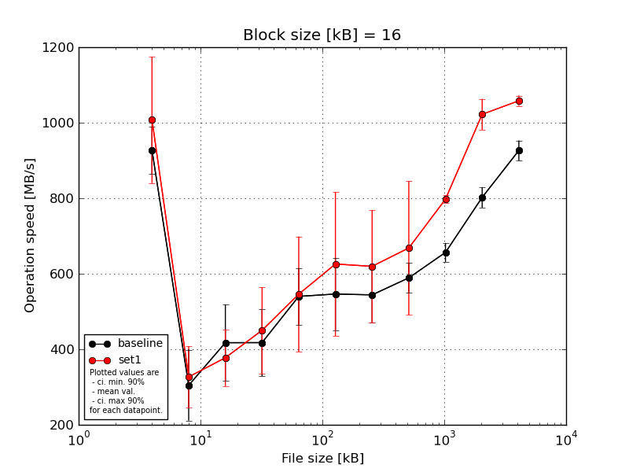
|
Block size [kB] |
File size [kB] |
| 16 |
32 |
64 |
128 |
256 |
512 |
1024 |
2048 |
4096 |
8192 |
16384 |
| baseline | 16 | 980.99 | 372.57 | 488.34 | 473.69 | 592.48 | 648.51 | 573.4 | 649.38 | 699.79 | 848.0 | 968.8 |
| 16 | 980.99 | 139.62 | 449.03 | 272.81 | 585.53 | 490.13 | 482.61 | 563.38 | 661.93 | 773.24 | 920.39 |
| 16 | 925.58 | 331.99 | 500.46 | 502.28 | 592.48 | 619.58 | 638.62 | 538.53 | 634.42 | 793.97 | 891.02 |
| 16 | 821.19 | 297.35 | 411.65 | 459.58 | 410.43 | 403.24 | 574.73 | 593.3 | 645.58 | 808.49 | 927.69 |
| 16 | 925.58 | 381.24 | 237.71 | 379.97 | 519.66 | 570.22 | 451.06 | 601.17 | 640.82 | 788.04 | 924.48 |
| mean val. |
926.87 |
304.55 |
417.44 |
417.67 |
540.12 |
546.33 |
544.08 |
589.15 |
656.51 |
802.34 |
926.48 |
| standard dev. |
65.25 |
98.13 |
106.37 |
92.82 |
78.71 |
100.01 |
76.1 |
41.88 |
26.25 |
28.48 |
27.8 |
| ci. min. 90% |
864.66 |
211.0 |
316.03 |
329.18 |
465.07 |
450.98 |
471.53 |
549.22 |
631.48 |
775.19 |
899.97 |
| ci. max 90% |
989.07 |
398.11 |
518.85 |
506.16 |
615.16 |
641.69 |
616.64 |
629.08 |
681.53 |
829.5 |
952.98 |
| geom. mean |
924.95 |
287.31 |
403.82 |
408.21 |
535.02 |
538.5 |
539.76 |
587.97 |
656.1 |
801.95 |
926.14 |
| median |
925.58 |
331.99 |
449.03 |
459.58 |
585.53 |
570.22 |
573.4 |
593.3 |
645.58 |
793.97 |
924.48 |
| first quartile |
925.58 |
297.35 |
411.65 |
379.97 |
519.66 |
490.13 |
482.61 |
563.38 |
640.82 |
788.04 |
920.39 |
| third quartile |
980.99 |
372.57 |
488.34 |
473.69 |
592.48 |
619.58 |
574.73 |
601.17 |
661.93 |
808.49 |
927.69 |
| minimum |
821.19 |
139.62 |
237.71 |
272.81 |
410.43 |
403.24 |
451.06 |
538.53 |
634.42 |
773.24 |
891.02 |
| maximum |
980.99 |
381.24 |
500.46 |
502.28 |
592.48 |
648.51 |
638.62 |
649.38 |
699.79 |
848.0 |
968.8 |
| set1 | 16 | 1195.79 | 452.28 | 270.58 | 601.38 | 816.77 | 976.42 | 893.58 | 996.06 | 809.25 | 1053.62 | 1070.88 |
| 16 | 1195.79 | 278.99 | 428.48 | 471.56 | 462.17 | 503.54 | 605.34 | 577.85 | 792.39 | 1030.8 | 1052.91 |
| 16 | 821.19 | 363.28 | 351.02 | 291.46 | 430.31 | 496.98 | 515.98 | 628.13 | 806.14 | 1041.26 | 1066.59 |
| 16 | 912.68 | 306.38 | 476.79 | 376.43 | 566.86 | 591.61 | 541.42 | 542.89 | 783.07 | 1038.71 | 1035.54 |
| 16 | 912.68 | 233.3 | 361.18 | 510.1 | 453.77 | 560.46 | 542.05 | 596.64 | 796.8 | 947.07 | 1064.95 |
| mean val. |
1007.63 |
326.85 |
377.61 |
450.19 |
545.98 |
625.8 |
619.68 |
668.31 |
797.53 |
1022.29 |
1058.17 |
| standard dev. |
175.78 |
84.44 |
78.83 |
119.94 |
160.21 |
199.94 |
156.63 |
185.8 |
10.58 |
42.84 |
14.31 |
| ci. min. 90% |
840.04 |
246.34 |
302.45 |
335.84 |
393.23 |
435.18 |
470.35 |
491.18 |
787.45 |
981.45 |
1044.54 |
| ci. max 90% |
1175.21 |
407.35 |
452.76 |
564.54 |
698.72 |
816.43 |
769.01 |
845.45 |
807.61 |
1063.14 |
1071.81 |
| geom. mean |
995.59 |
318.48 |
370.78 |
436.64 |
529.91 |
604.95 |
606.27 |
651.2 |
797.47 |
1021.55 |
1058.1 |
| median |
912.68 |
306.38 |
361.18 |
471.56 |
462.17 |
560.46 |
542.05 |
596.64 |
796.8 |
1038.71 |
1064.95 |
| first quartile |
912.68 |
278.99 |
351.02 |
376.43 |
453.77 |
503.54 |
541.42 |
577.85 |
792.39 |
1030.8 |
1052.91 |
| third quartile |
1195.79 |
363.28 |
428.48 |
510.1 |
566.86 |
591.61 |
605.34 |
628.13 |
806.14 |
1041.26 |
1066.59 |
| minimum |
821.19 |
233.3 |
270.58 |
291.46 |
430.31 |
496.98 |
515.98 |
542.89 |
783.07 |
947.07 |
1035.54 |
| maximum |
1195.79 |
452.28 |
476.79 |
601.38 |
816.77 |
976.42 |
893.58 |
996.06 |
809.25 |
1053.62 |
1070.88 |
| baseline set1 difference |
8.71 % |
7.32 % |
-9.54 % |
7.79 % |
1.08 % |
14.55 % |
13.89 % |
13.44 % |
21.48 % |
27.41 % |
14.21 % |
| ttest p-value |
0.3637 |
0.7102 |
0.5201 |
0.6444 |
0.9433 |
0.4496 |
0.3602 |
0.3799 |
0.0 |
0.0 |
0.0 |
| ttest equality |
SAME |
SAME |
SAME |
SAME |
SAME |
SAME |
SAME |
SAME |
DIFF |
DIFF |
DIFF |
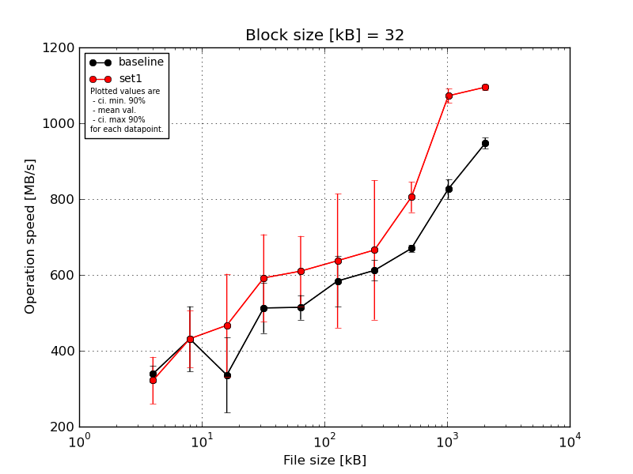
|
Block size [kB] |
File size [kB] |
| 32 |
64 |
128 |
256 |
512 |
1024 |
2048 |
4096 |
8192 |
16384 |
| baseline | 32 | 331.99 | 508.22 | 499.89 | 458.73 | 535.42 | 682.13 | 637.97 | 684.23 | 857.8 | 970.99 |
| 32 | 322.2 | 456.06 | 308.62 | 446.43 | 500.54 | 525.81 | 565.77 | 660.94 | 793.25 | 936.28 |
| 32 | 359.29 | 492.01 | 361.13 | 599.59 | 563.02 | 634.08 | 630.12 | 663.45 | 807.75 | 947.75 |
| 32 | 315.22 | 282.85 | 221.24 | 485.5 | 480.36 | 534.73 | 616.91 | 675.01 | 848.9 | 948.93 |
| 32 | 367.35 | 416.89 | 289.37 | 574.62 | 492.54 | 543.18 | 609.73 | 665.79 | 825.51 | 932.63 |
| mean val. |
339.21 |
431.2 |
336.05 |
512.98 |
514.38 |
583.99 |
612.1 |
669.88 |
826.64 |
947.31 |
| standard dev. |
22.98 |
90.08 |
104.39 |
69.69 |
34.04 |
70.03 |
28.15 |
9.62 |
27.11 |
15.01 |
| ci. min. 90% |
317.3 |
345.32 |
236.53 |
446.53 |
481.92 |
517.22 |
585.27 |
660.71 |
800.8 |
933.01 |
| ci. max 90% |
361.12 |
517.09 |
435.57 |
579.42 |
546.83 |
650.75 |
638.94 |
679.06 |
852.49 |
961.62 |
| geom. mean |
338.59 |
422.4 |
323.93 |
509.27 |
513.49 |
580.74 |
611.57 |
669.83 |
826.29 |
947.22 |
| median |
331.99 |
456.06 |
308.62 |
485.5 |
500.54 |
543.18 |
616.91 |
665.79 |
825.51 |
947.75 |
| first quartile |
322.2 |
416.89 |
289.37 |
458.73 |
492.54 |
534.73 |
609.73 |
663.45 |
807.75 |
936.28 |
| third quartile |
359.29 |
492.01 |
361.13 |
574.62 |
535.42 |
634.08 |
630.12 |
675.01 |
848.9 |
948.93 |
| minimum |
315.22 |
282.85 |
221.24 |
446.43 |
480.36 |
525.81 |
565.77 |
660.94 |
793.25 |
932.63 |
| maximum |
367.35 |
508.22 |
499.89 |
599.59 |
563.02 |
682.13 |
637.97 |
684.23 |
857.8 |
970.99 |
| set1 | 32 | 396.22 | 521.36 | 668.05 | 795.7 | 779.96 | 967.14 | 1007.54 | 787.12 | 1093.34 | 1088.14 |
| 32 | 367.35 | 500.46 | 280.4 | 476.23 | 534.2 | 532.49 | 599.88 | 768.05 | 1093.48 | 1094.84 |
| 32 | 231.66 | 349.15 | 488.25 | 565.63 | 570.68 | 580.06 | 609.38 | 873.55 | 1064.11 | 1107.96 |
| 32 | 288.83 | 359.2 | 497.99 | 540.0 | 591.78 | 569.12 | 542.61 | 782.49 | 1053.35 | 1092.07 |
| 32 | 325.4 | 428.48 | 400.89 | 582.93 | 573.34 | 538.78 | 569.65 | 815.66 | 1057.77 | 1092.75 |
| mean val. |
321.89 |
431.73 |
467.12 |
592.1 |
609.99 |
637.52 |
665.81 |
805.37 |
1072.41 |
1095.15 |
| standard dev. |
64.88 |
78.82 |
142.32 |
120.81 |
97.28 |
185.35 |
192.83 |
41.84 |
19.55 |
7.56 |
| ci. min. 90% |
260.03 |
356.58 |
331.43 |
476.92 |
517.24 |
460.81 |
481.97 |
765.48 |
1053.78 |
1087.95 |
| ci. max 90% |
383.75 |
506.87 |
602.81 |
707.27 |
702.74 |
814.22 |
849.66 |
845.27 |
1091.05 |
1102.36 |
| geom. mean |
316.36 |
425.95 |
449.05 |
583.21 |
604.43 |
619.98 |
647.53 |
804.53 |
1072.27 |
1095.13 |
| median |
325.4 |
428.48 |
488.25 |
565.63 |
573.34 |
569.12 |
599.88 |
787.12 |
1064.11 |
1092.75 |
| first quartile |
288.83 |
359.2 |
400.89 |
540.0 |
570.68 |
538.78 |
569.65 |
782.49 |
1057.77 |
1092.07 |
| third quartile |
367.35 |
500.46 |
497.99 |
582.93 |
591.78 |
580.06 |
609.38 |
815.66 |
1093.34 |
1094.84 |
| minimum |
231.66 |
349.15 |
280.4 |
476.23 |
534.2 |
532.49 |
542.61 |
768.05 |
1053.35 |
1088.14 |
| maximum |
396.22 |
521.36 |
668.05 |
795.7 |
779.96 |
967.14 |
1007.54 |
873.55 |
1093.48 |
1107.96 |
| baseline set1 difference |
-5.11 % |
0.12 % |
39.0 % |
15.42 % |
18.59 % |
9.17 % |
8.77 % |
20.23 % |
29.73 % |
15.61 % |
| ttest p-value |
0.5891 |
0.9924 |
0.1354 |
0.2403 |
0.0717 |
0.5625 |
0.5548 |
0.0001 |
0.0 |
0.0 |
| ttest equality |
SAME |
SAME |
SAME |
SAME |
DIFF |
SAME |
SAME |
DIFF |
DIFF |
DIFF |
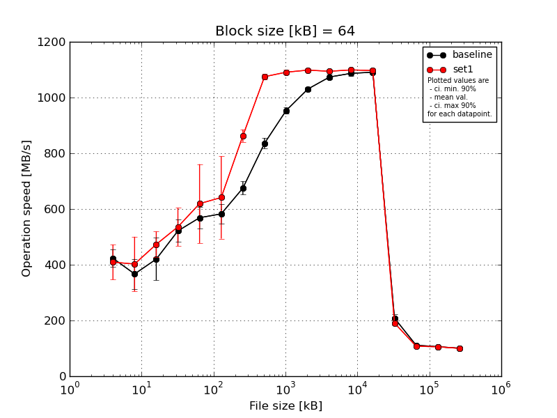
|
Block size [kB] |
File size [kB] |
| 64 |
128 |
256 |
512 |
1024 |
2048 |
4096 |
8192 |
16384 |
32768 |
65536 |
131072 |
262144 |
524288 |
1048576 |
2097152 |
4194304 |
| baseline | 64 | 459.25 | 432.65 | 548.19 | 582.74 | 635.33 | 630.73 | 713.02 | 866.08 | 971.88 | 1025.8 | 1084.96 | 1086.05 | 1089.93 | 189.66 | 116.76 | 105.84 | 100.73 |
| 64 | 396.1 | 327.31 | 419.46 | 513.91 | 542.61 | 546.6 | 660.84 | 822.96 | 943.06 | 1034.46 | 1072.94 | 1078.19 | 1095.54 | 202.78 | 111.83 | 105.69 | 100.33 |
| 64 | 452.9 | 381.35 | 425.94 | 524.71 | 577.66 | 597.7 | 660.16 | 841.94 | 956.08 | 1043.37 | 1079.19 | 1102.5 | 1093.67 | 221.44 | 108.46 | 107.19 | 99.93 |
| 64 | 385.62 | 400.58 | 342.47 | 520.8 | 544.38 | 546.75 | 687.76 | 834.03 | 952.37 | 1026.07 | 1058.27 | 1077.87 | 1085.06 | 221.65 | 107.45 | 105.28 | 100.66 |
| 64 | 422.26 | 292.6 | 364.49 | 465.12 | 543.74 | 590.84 | 653.81 | 814.83 | 944.96 | 1022.69 | 1072.6 | 1090.13 | 1089.42 | 206.3 | 110.76 | 105.78 | 100.47 |
| mean val. |
423.23 |
366.9 |
420.11 |
521.45 |
568.74 |
582.52 |
675.12 |
835.97 |
953.67 |
1030.48 |
1073.59 |
1086.95 |
1090.72 |
208.36 |
111.05 |
105.96 |
100.42 |
| standard dev. |
32.9 |
56.47 |
79.94 |
41.82 |
40.05 |
36.03 |
24.89 |
19.76 |
11.48 |
8.43 |
9.96 |
10.15 |
4.07 |
13.53 |
3.64 |
0.72 |
0.32 |
| ci. min. 90% |
391.86 |
313.07 |
343.9 |
481.58 |
530.56 |
548.17 |
651.39 |
817.12 |
942.72 |
1022.44 |
1064.1 |
1077.27 |
1086.84 |
195.46 |
107.58 |
105.26 |
100.12 |
| ci. max 90% |
454.59 |
420.74 |
496.32 |
561.33 |
606.92 |
616.88 |
698.85 |
854.81 |
964.62 |
1038.51 |
1083.09 |
1096.62 |
1094.6 |
221.27 |
114.52 |
106.65 |
100.73 |
| geom. mean |
422.2 |
363.31 |
414.43 |
520.12 |
567.66 |
581.64 |
674.76 |
835.78 |
953.61 |
1030.45 |
1073.56 |
1086.91 |
1090.72 |
208.01 |
111.0 |
105.95 |
100.42 |
| median |
422.26 |
381.35 |
419.46 |
520.8 |
544.38 |
590.84 |
660.84 |
834.03 |
952.37 |
1026.07 |
1072.94 |
1086.05 |
1089.93 |
206.3 |
110.76 |
105.78 |
100.47 |
| first quartile |
396.1 |
327.31 |
364.49 |
513.91 |
543.74 |
546.75 |
660.16 |
822.96 |
944.96 |
1025.8 |
1072.6 |
1078.19 |
1089.42 |
202.78 |
108.46 |
105.69 |
100.33 |
| third quartile |
452.9 |
400.58 |
425.94 |
524.71 |
577.66 |
597.7 |
687.76 |
841.94 |
956.08 |
1034.46 |
1079.19 |
1090.13 |
1093.67 |
221.44 |
111.83 |
105.84 |
100.66 |
| minimum |
385.62 |
292.6 |
342.47 |
465.12 |
542.61 |
546.6 |
653.81 |
814.83 |
943.06 |
1022.69 |
1058.27 |
1077.87 |
1085.06 |
189.66 |
107.45 |
105.28 |
99.93 |
| maximum |
459.25 |
432.65 |
548.19 |
582.74 |
635.33 |
630.73 |
713.02 |
866.08 |
971.88 |
1043.37 |
1084.96 |
1102.5 |
1095.54 |
221.65 |
116.76 |
107.19 |
100.73 |
| set1 | 64 | 476.79 | 560.85 | 497.0 | 651.13 | 884.91 | 915.31 | 882.23 | 1087.07 | 1097.09 | 1102.5 | 1097.6 | 1104.34 | 1100.85 | 177.24 | 106.38 | 104.74 | 100.3 |
| 64 | 332.75 | 396.64 | 426.63 | 472.56 | 554.67 | 555.54 | 884.98 | 1065.4 | 1080.12 | 1085.33 | 1089.79 | 1101.81 | 1098.84 | 186.98 | 104.51 | 104.85 | 100.06 |
| 64 | 346.84 | 281.0 | 419.46 | 478.06 | 549.73 | 546.6 | 860.78 | 1081.36 | 1102.92 | 1102.23 | 1091.14 | 1096.89 | 1094.25 | 202.38 | 107.87 | 106.04 | 99.65 |
| 64 | 427.78 | 357.19 | 531.78 | 539.42 | 560.53 | 585.31 | 859.28 | 1076.71 | 1087.31 | 1102.15 | 1096.46 | 1101.33 | 1105.64 | 197.1 | 103.22 | 106.16 | 99.82 |
| 64 | 462.49 | 416.83 | 491.18 | 538.72 | 546.15 | 603.68 | 826.63 | 1063.54 | 1087.54 | 1099.47 | 1096.38 | 1091.41 | 1085.3 | 189.0 | 116.07 | 105.99 | 99.78 |
| mean val. |
409.33 |
402.5 |
473.21 |
535.98 |
619.2 |
641.29 |
862.78 |
1074.82 |
1091.0 |
1098.34 |
1094.27 |
1099.16 |
1096.97 |
190.54 |
107.61 |
105.56 |
99.92 |
| standard dev. |
66.12 |
102.63 |
48.42 |
71.86 |
148.64 |
154.88 |
23.42 |
10.16 |
8.99 |
7.37 |
3.54 |
5.09 |
7.7 |
9.68 |
5.05 |
0.7 |
0.26 |
| ci. min. 90% |
346.29 |
304.66 |
427.05 |
467.47 |
477.49 |
493.63 |
840.45 |
1065.13 |
1082.43 |
1091.31 |
1090.9 |
1094.3 |
1089.63 |
181.31 |
102.8 |
104.89 |
99.68 |
| ci. max 90% |
472.37 |
500.35 |
519.38 |
604.49 |
760.9 |
788.95 |
885.11 |
1084.5 |
1099.56 |
1105.37 |
1097.65 |
1104.01 |
1104.32 |
199.77 |
112.43 |
106.22 |
100.17 |
| geom. mean |
404.93 |
392.43 |
471.21 |
532.33 |
607.29 |
628.68 |
862.52 |
1074.78 |
1090.97 |
1098.32 |
1094.27 |
1099.15 |
1096.95 |
190.34 |
107.52 |
105.55 |
99.92 |
| median |
427.78 |
396.64 |
491.18 |
538.72 |
554.67 |
585.31 |
860.78 |
1076.71 |
1087.54 |
1102.15 |
1096.38 |
1101.33 |
1098.84 |
189.0 |
106.38 |
105.99 |
99.82 |
| first quartile |
346.84 |
357.19 |
426.63 |
478.06 |
549.73 |
555.54 |
859.28 |
1065.4 |
1087.31 |
1099.47 |
1091.14 |
1096.89 |
1094.25 |
186.98 |
104.51 |
104.85 |
99.78 |
| third quartile |
462.49 |
416.83 |
497.0 |
539.42 |
560.53 |
603.68 |
882.23 |
1081.36 |
1097.09 |
1102.23 |
1096.46 |
1101.81 |
1100.85 |
197.1 |
107.87 |
106.04 |
100.06 |
| minimum |
332.75 |
281.0 |
419.46 |
472.56 |
546.15 |
546.6 |
826.63 |
1063.54 |
1080.12 |
1085.33 |
1089.79 |
1091.41 |
1085.3 |
177.24 |
103.22 |
104.74 |
99.65 |
| maximum |
476.79 |
560.85 |
531.78 |
651.13 |
884.91 |
915.31 |
884.98 |
1087.07 |
1102.92 |
1102.5 |
1097.6 |
1104.34 |
1105.64 |
202.38 |
116.07 |
106.16 |
100.3 |
| baseline set1 difference |
-3.28 % |
9.7 % |
12.64 % |
2.79 % |
8.87 % |
10.09 % |
27.8 % |
28.57 % |
14.4 % |
6.59 % |
1.93 % |
1.12 % |
0.57 % |
-8.55 % |
-3.1 % |
-0.38 % |
-0.5 % |
| ttest p-value |
0.685 |
0.5159 |
0.2396 |
0.7063 |
0.4846 |
0.4326 |
0.0 |
0.0 |
0.0 |
0.0 |
0.0024 |
0.0429 |
0.1473 |
0.0435 |
0.2515 |
0.3991 |
0.0254 |
| ttest equality |
SAME |
SAME |
SAME |
SAME |
SAME |
SAME |
DIFF |
DIFF |
DIFF |
DIFF |
DIFF |
DIFF |
SAME |
DIFF |
SAME |
SAME |
DIFF |
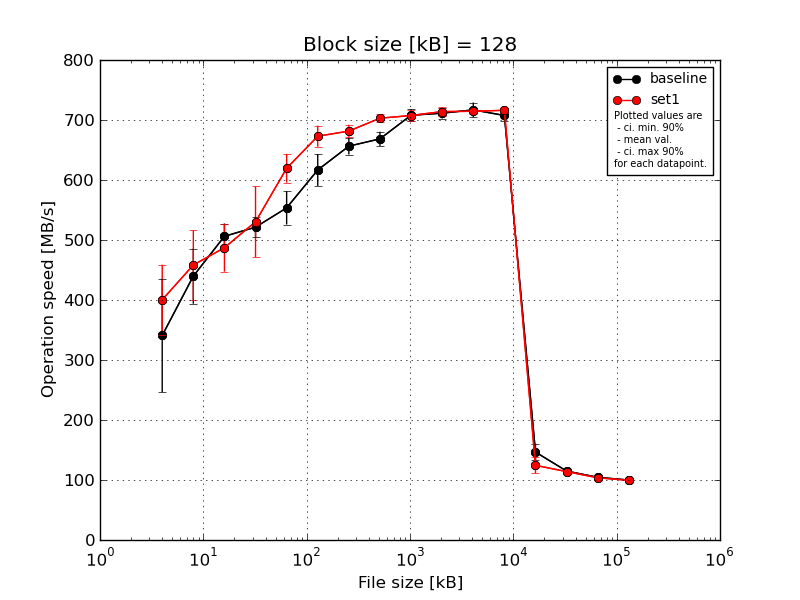
|
Block size [kB] |
File size [kB] |
| 128 |
256 |
512 |
1024 |
2048 |
4096 |
8192 |
16384 |
32768 |
65536 |
131072 |
262144 |
524288 |
1048576 |
2097152 |
4194304 |
| baseline | 128 | 454.79 | 505.14 | 539.97 | 506.33 | 587.86 | 658.55 | 670.8 | 683.4 | 722.15 | 709.41 | 723.45 | 719.88 | 124.47 | 113.9 | 103.97 | 100.12 |
| 128 | 283.43 | 413.18 | 517.71 | 510.95 | 582.43 | 602.03 | 634.61 | 671.96 | 713.41 | 719.75 | 705.77 | 715.24 | 155.04 | 114.15 | 104.76 | 100.14 |
| 128 | 439.91 | 411.24 | 494.63 | 549.44 | 535.51 | 607.35 | 665.05 | 673.17 | 708.65 | 717.58 | 728.97 | 701.71 | 160.08 | 114.03 | 103.88 | 99.85 |
| 128 | 238.12 | 476.23 | 492.08 | 524.96 | 534.18 | 629.02 | 648.77 | 664.31 | 693.86 | 696.2 | 700.53 | 699.33 | 154.17 | 116.52 | 105.38 | 99.75 |
| 128 | 288.1 | 393.05 | 486.37 | 515.22 | 527.72 | 586.6 | 662.74 | 649.98 | 701.54 | 713.89 | 725.77 | 701.47 | 138.9 | 116.01 | 104.44 | 99.95 |
| mean val. |
340.87 |
439.77 |
506.15 |
521.38 |
553.54 |
616.71 |
656.39 |
668.57 |
707.92 |
711.36 |
716.9 |
707.53 |
146.53 |
114.92 |
104.48 |
99.96 |
| standard dev. |
99.28 |
48.24 |
22.36 |
17.13 |
29.06 |
27.9 |
14.62 |
12.41 |
10.86 |
9.34 |
12.84 |
9.35 |
14.66 |
1.24 |
0.62 |
0.17 |
| ci. min. 90% |
246.21 |
393.78 |
484.84 |
505.05 |
525.83 |
590.12 |
642.45 |
656.73 |
697.57 |
702.46 |
704.66 |
698.61 |
132.56 |
113.74 |
103.9 |
99.8 |
| ci. max 90% |
435.53 |
485.76 |
527.47 |
537.71 |
581.25 |
643.31 |
670.33 |
680.4 |
718.28 |
720.27 |
729.14 |
716.44 |
160.51 |
116.11 |
105.07 |
100.12 |
| geom. mean |
329.6 |
437.71 |
505.77 |
521.16 |
552.93 |
616.21 |
656.26 |
668.47 |
707.86 |
711.31 |
716.81 |
707.48 |
145.92 |
114.92 |
104.48 |
99.96 |
| median |
288.1 |
413.18 |
494.63 |
515.22 |
535.51 |
607.35 |
662.74 |
671.96 |
708.65 |
713.89 |
723.45 |
701.71 |
154.17 |
114.15 |
104.44 |
99.95 |
| first quartile |
283.43 |
411.24 |
492.08 |
510.95 |
534.18 |
602.03 |
648.77 |
664.31 |
701.54 |
709.41 |
705.77 |
701.47 |
138.9 |
114.03 |
103.97 |
99.85 |
| third quartile |
439.91 |
476.23 |
517.71 |
524.96 |
582.43 |
629.02 |
665.05 |
673.17 |
713.41 |
717.58 |
725.77 |
715.24 |
155.04 |
116.01 |
104.76 |
100.12 |
| minimum |
238.12 |
393.05 |
486.37 |
506.33 |
527.72 |
586.6 |
634.61 |
649.98 |
693.86 |
696.2 |
700.53 |
699.33 |
124.47 |
113.9 |
103.88 |
99.75 |
| maximum |
454.79 |
505.14 |
539.97 |
549.44 |
587.86 |
658.55 |
670.8 |
683.4 |
722.15 |
719.75 |
728.97 |
719.88 |
160.08 |
116.52 |
105.38 |
100.14 |
| set1 | 128 | 459.58 | 503.2 | 559.87 | 611.25 | 624.39 | 662.59 | 697.9 | 711.11 | 715.93 | 711.43 | 716.83 | 719.31 | 100.97 | 113.45 | 103.32 | 99.63 |
| 128 | 328.95 | 379.95 | 476.65 | 547.29 | 605.68 | 672.95 | 682.36 | 699.88 | 698.13 | 713.53 | 712.2 | 709.33 | 127.27 | 112.49 | 105.67 | 99.23 |
| 128 | 339.61 | 409.95 | 462.97 | 495.32 | 651.25 | 704.84 | 683.99 | 707.68 | 717.87 | 724.9 | 718.41 | 715.65 | 124.57 | 113.53 | 102.87 | 99.61 |
| 128 | 440.28 | 479.72 | 480.36 | 550.95 | 585.31 | 659.85 | 669.79 | 693.0 | 697.05 | 715.44 | 716.03 | 720.51 | 130.72 | 117.8 | 103.11 | 99.12 |
| 128 | 433.72 | 518.89 | 455.82 | 447.07 | 631.11 | 664.55 | 673.68 | 703.23 | 708.48 | 705.08 | 708.96 | 716.32 | 138.59 | 112.82 | 103.27 | 99.52 |
| mean val. |
400.43 |
458.34 |
487.13 |
530.38 |
619.55 |
672.96 |
681.55 |
702.98 |
707.49 |
714.08 |
714.49 |
716.22 |
124.43 |
114.02 |
103.65 |
99.42 |
| standard dev. |
61.24 |
60.46 |
41.86 |
62.09 |
25.13 |
18.48 |
10.89 |
7.03 |
9.71 |
7.2 |
3.84 |
4.35 |
14.13 |
2.16 |
1.14 |
0.23 |
| ci. min. 90% |
342.04 |
400.7 |
447.22 |
471.18 |
595.59 |
655.33 |
671.16 |
696.28 |
698.24 |
707.21 |
710.83 |
712.07 |
110.96 |
111.96 |
102.56 |
99.2 |
| ci. max 90% |
458.82 |
515.99 |
527.04 |
589.57 |
643.51 |
690.58 |
691.93 |
709.68 |
716.75 |
720.94 |
718.15 |
720.37 |
137.89 |
116.08 |
104.74 |
99.64 |
| geom. mean |
396.54 |
455.04 |
485.78 |
527.43 |
619.14 |
672.76 |
681.48 |
702.95 |
707.44 |
714.05 |
714.48 |
716.21 |
123.73 |
114.0 |
103.64 |
99.42 |
| median |
433.72 |
479.72 |
476.65 |
547.29 |
624.39 |
664.55 |
682.36 |
703.23 |
708.48 |
713.53 |
716.03 |
716.32 |
127.27 |
113.45 |
103.27 |
99.52 |
| first quartile |
339.61 |
409.95 |
462.97 |
495.32 |
605.68 |
662.59 |
673.68 |
699.88 |
698.13 |
711.43 |
712.2 |
715.65 |
124.57 |
112.82 |
103.11 |
99.23 |
| third quartile |
440.28 |
503.2 |
480.36 |
550.95 |
631.11 |
672.95 |
683.99 |
707.68 |
715.93 |
715.44 |
716.83 |
719.31 |
130.72 |
113.53 |
103.32 |
99.61 |
| minimum |
328.95 |
379.95 |
455.82 |
447.07 |
585.31 |
659.85 |
669.79 |
693.0 |
697.05 |
705.08 |
708.96 |
709.33 |
100.97 |
112.49 |
102.87 |
99.12 |
| maximum |
459.58 |
518.89 |
559.87 |
611.25 |
651.25 |
704.84 |
697.9 |
711.11 |
717.87 |
724.9 |
718.41 |
720.51 |
138.59 |
117.8 |
105.67 |
99.63 |
| baseline set1 difference |
17.47 % |
4.22 % |
-3.76 % |
1.73 % |
11.93 % |
9.12 % |
3.83 % |
5.15 % |
-0.06 % |
0.38 % |
-0.34 % |
1.23 % |
-15.09 % |
-0.79 % |
-0.8 % |
-0.54 % |
| ttest p-value |
0.2866 |
0.6059 |
0.3963 |
0.7627 |
0.0049 |
0.0056 |
0.015 |
0.0007 |
0.9489 |
0.621 |
0.6977 |
0.0962 |
0.0413 |
0.4391 |
0.1885 |
0.0028 |
| ttest equality |
SAME |
SAME |
SAME |
SAME |
DIFF |
DIFF |
DIFF |
DIFF |
SAME |
SAME |
SAME |
DIFF |
DIFF |
SAME |
SAME |
DIFF |
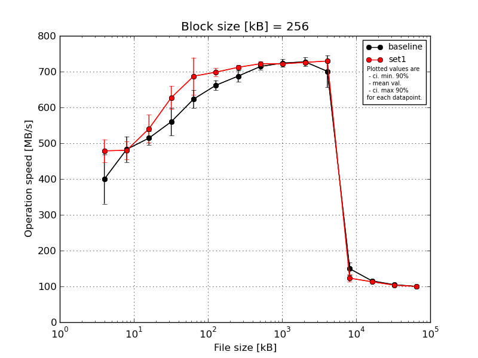
|
Block size [kB] |
File size [kB] |
| 256 |
512 |
1024 |
2048 |
4096 |
8192 |
16384 |
32768 |
65536 |
131072 |
262144 |
524288 |
1048576 |
2097152 |
4194304 |
| baseline | 256 | 497.94 | 474.49 | 522.21 | 619.6 | 666.22 | 684.41 | 710.29 | 723.11 | 733.45 | 739.51 | 728.54 | 119.37 | 115.02 | 103.82 | 100.0 |
| 256 | 355.59 | 476.1 | 481.73 | 545.11 | 612.09 | 663.74 | 700.12 | 715.24 | 727.77 | 715.29 | 720.02 | 156.25 | 112.54 | 105.54 | 100.34 |
| 256 | 456.34 | 535.42 | 533.84 | 572.73 | 607.26 | 644.49 | 675.45 | 713.08 | 722.03 | 734.83 | 617.34 | 168.8 | 116.42 | 104.33 | 99.83 |
| 256 | 342.47 | 432.15 | 521.11 | 553.38 | 628.13 | 660.94 | 680.22 | 699.15 | 705.68 | 711.49 | 715.19 | 158.15 | 118.34 | 105.41 | 99.72 |
| 256 | 346.2 | 496.04 | 512.51 | 509.3 | 601.77 | 655.46 | 671.2 | 721.08 | 730.66 | 735.47 | 722.43 | 144.91 | 114.62 | 104.33 | 100.26 |
| mean val. |
399.71 |
482.84 |
514.28 |
560.02 |
623.09 |
661.81 |
687.46 |
714.33 |
723.92 |
727.32 |
700.71 |
149.5 |
115.39 |
104.69 |
100.03 |
| standard dev. |
72.36 |
37.5 |
19.72 |
40.46 |
26.04 |
14.63 |
16.9 |
9.43 |
11.04 |
12.91 |
46.85 |
18.85 |
2.16 |
0.75 |
0.27 |
| ci. min. 90% |
330.72 |
447.09 |
495.48 |
521.44 |
598.27 |
647.86 |
671.34 |
705.34 |
713.4 |
715.01 |
656.04 |
131.52 |
113.33 |
103.97 |
99.77 |
| ci. max 90% |
468.69 |
518.59 |
533.08 |
598.6 |
647.92 |
675.75 |
703.57 |
723.32 |
734.44 |
739.63 |
745.37 |
167.47 |
117.45 |
105.4 |
100.28 |
| geom. mean |
394.71 |
481.68 |
513.97 |
558.87 |
622.67 |
661.68 |
687.29 |
714.28 |
723.85 |
727.22 |
699.37 |
148.47 |
115.37 |
104.68 |
100.03 |
| median |
355.59 |
476.1 |
521.11 |
553.38 |
612.09 |
660.94 |
680.22 |
715.24 |
727.77 |
734.83 |
720.02 |
156.25 |
115.02 |
104.33 |
100.0 |
| first quartile |
346.2 |
474.49 |
512.51 |
545.11 |
607.26 |
655.46 |
675.45 |
713.08 |
722.03 |
715.29 |
715.19 |
144.91 |
114.62 |
104.33 |
99.83 |
| third quartile |
456.34 |
496.04 |
522.21 |
572.73 |
628.13 |
663.74 |
700.12 |
721.08 |
730.66 |
735.47 |
722.43 |
158.15 |
116.42 |
105.41 |
100.26 |
| minimum |
342.47 |
432.15 |
481.73 |
509.3 |
601.77 |
644.49 |
671.2 |
699.15 |
705.68 |
711.49 |
617.34 |
119.37 |
112.54 |
103.82 |
99.72 |
| maximum |
497.94 |
535.42 |
533.84 |
619.6 |
666.22 |
684.41 |
710.29 |
723.11 |
733.45 |
739.51 |
728.54 |
168.8 |
118.34 |
105.54 |
100.34 |
| set1 | 256 | 527.5 | 519.76 | 611.25 | 667.79 | 674.19 | 706.84 | 717.87 | 723.64 | 724.19 | 730.03 | 730.38 | 103.43 | 112.01 | 102.73 | 99.76 |
| 256 | 482.59 | 486.83 | 540.79 | 626.77 | 669.03 | 689.84 | 717.14 | 733.25 | 725.12 | 721.59 | 733.48 | 129.21 | 112.22 | 105.46 | 99.25 |
| 256 | 462.78 | 467.3 | 513.08 | 650.44 | 782.45 | 693.18 | 712.66 | 721.36 | 722.55 | 727.76 | 729.43 | 127.19 | 112.2 | 103.71 | 99.92 |
| 256 | 483.48 | 476.21 | 526.08 | 612.76 | 643.5 | 688.1 | 710.29 | 718.36 | 721.11 | 724.77 | 728.09 | 127.99 | 116.07 | 103.34 | 99.91 |
| 256 | 437.12 | 450.44 | 511.51 | 578.33 | 666.53 | 714.53 | 702.06 | 713.59 | 715.47 | 724.67 | 726.28 | 127.47 | 112.0 | 102.02 | 99.88 |
| mean val. |
478.7 |
480.11 |
540.54 |
627.22 |
687.14 |
698.5 |
712.0 |
722.04 |
721.69 |
725.77 |
729.53 |
123.06 |
112.9 |
103.45 |
99.74 |
| standard dev. |
33.17 |
25.87 |
41.25 |
34.58 |
54.56 |
11.6 |
6.38 |
7.31 |
3.8 |
3.23 |
2.69 |
11.0 |
1.78 |
1.29 |
0.29 |
| ci. min. 90% |
447.07 |
455.44 |
501.21 |
594.25 |
635.12 |
687.44 |
705.92 |
715.07 |
718.06 |
722.69 |
726.97 |
112.57 |
111.21 |
102.22 |
99.47 |
| ci. max 90% |
510.32 |
504.77 |
579.87 |
660.19 |
739.16 |
709.56 |
718.09 |
729.01 |
725.31 |
728.85 |
732.1 |
133.55 |
114.6 |
104.68 |
100.02 |
| geom. mean |
477.79 |
479.56 |
539.35 |
626.45 |
685.51 |
698.42 |
711.98 |
722.01 |
721.68 |
725.76 |
729.53 |
122.63 |
112.89 |
103.44 |
99.74 |
| median |
482.59 |
476.21 |
526.08 |
626.77 |
669.03 |
693.18 |
712.66 |
721.36 |
722.55 |
724.77 |
729.43 |
127.47 |
112.2 |
103.34 |
99.88 |
| first quartile |
462.78 |
467.3 |
513.08 |
612.76 |
666.53 |
689.84 |
710.29 |
718.36 |
721.11 |
724.67 |
728.09 |
127.19 |
112.01 |
102.73 |
99.76 |
| third quartile |
483.48 |
486.83 |
540.79 |
650.44 |
674.19 |
706.84 |
717.14 |
723.64 |
724.19 |
727.76 |
730.38 |
127.99 |
112.22 |
103.71 |
99.91 |
| minimum |
437.12 |
450.44 |
511.51 |
578.33 |
643.5 |
688.1 |
702.06 |
713.59 |
715.47 |
721.59 |
726.28 |
103.43 |
112.0 |
102.02 |
99.25 |
| maximum |
527.5 |
519.76 |
611.25 |
667.79 |
782.45 |
714.53 |
717.87 |
733.25 |
725.12 |
730.03 |
733.48 |
129.21 |
116.07 |
105.46 |
99.92 |
| baseline set1 difference |
19.76 % |
-0.57 % |
5.11 % |
12.0 % |
10.28 % |
5.54 % |
3.57 % |
1.08 % |
-0.31 % |
-0.21 % |
4.11 % |
-17.68 % |
-2.15 % |
-1.18 % |
-0.28 % |
| ttest p-value |
0.0573 |
0.8966 |
0.2349 |
0.0224 |
0.0453 |
0.0023 |
0.0161 |
0.1866 |
0.6804 |
0.801 |
0.2068 |
0.0267 |
0.082 |
0.1015 |
0.1435 |
| ttest equality |
DIFF |
SAME |
SAME |
DIFF |
DIFF |
DIFF |
DIFF |
SAME |
SAME |
SAME |
SAME |
DIFF |
DIFF |
SAME |
SAME |
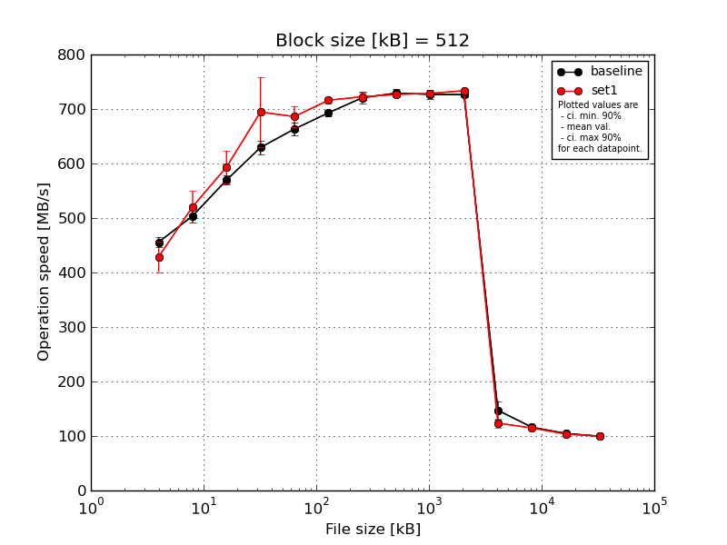
|
Block size [kB] |
File size [kB] |
| 512 |
1024 |
2048 |
4096 |
8192 |
16384 |
32768 |
65536 |
131072 |
262144 |
524288 |
1048576 |
2097152 |
4194304 |
| baseline | 512 | 448.03 | 493.34 | 571.94 | 645.48 | 668.67 | 701.63 | 730.64 | 734.13 | 725.88 | 731.79 | 118.63 | 114.88 | 104.45 | 99.57 |
| 512 | 468.97 | 489.94 | 580.73 | 635.75 | 663.19 | 686.52 | 723.26 | 731.72 | 721.79 | 729.99 | 162.83 | 115.36 | 105.14 | 99.71 |
| 512 | 458.71 | 508.91 | 573.86 | 610.97 | 643.29 | 688.53 | 721.62 | 730.21 | 733.8 | 720.69 | 155.99 | 117.79 | 103.68 | 99.88 |
| 512 | 446.41 | 520.85 | 565.77 | 631.89 | 662.36 | 697.38 | 702.16 | 715.67 | 716.6 | 722.45 | 156.83 | 118.2 | 105.72 | 99.95 |
| 512 | 457.01 | 506.08 | 556.32 | 622.86 | 678.72 | 690.55 | 725.44 | 734.1 | 735.57 | 726.83 | 141.42 | 114.4 | 104.65 | 99.49 |
| mean val. |
455.83 |
503.82 |
569.73 |
629.39 |
663.24 |
692.92 |
720.62 |
729.17 |
726.73 |
726.35 |
147.14 |
116.13 |
104.73 |
99.72 |
| standard dev. |
9.11 |
12.48 |
9.2 |
13.11 |
12.92 |
6.36 |
10.87 |
7.72 |
8.0 |
4.75 |
17.78 |
1.74 |
0.76 |
0.2 |
| ci. min. 90% |
447.14 |
491.92 |
560.95 |
616.89 |
650.92 |
686.86 |
710.26 |
721.8 |
719.1 |
721.82 |
130.19 |
114.46 |
104.0 |
99.53 |
| ci. max 90% |
464.51 |
515.73 |
578.5 |
641.89 |
675.56 |
698.98 |
730.99 |
736.53 |
734.35 |
730.88 |
164.09 |
117.79 |
105.46 |
99.91 |
| geom. mean |
455.76 |
503.7 |
569.67 |
629.28 |
663.14 |
692.9 |
720.56 |
729.13 |
726.69 |
726.34 |
146.21 |
116.12 |
104.73 |
99.72 |
| median |
457.01 |
506.08 |
571.94 |
631.89 |
663.19 |
690.55 |
723.26 |
731.72 |
725.88 |
726.83 |
155.99 |
115.36 |
104.65 |
99.71 |
| first quartile |
448.03 |
493.34 |
565.77 |
622.86 |
662.36 |
688.53 |
721.62 |
730.21 |
721.79 |
722.45 |
141.42 |
114.88 |
104.45 |
99.57 |
| third quartile |
458.71 |
508.91 |
573.86 |
635.75 |
668.67 |
697.38 |
725.44 |
734.1 |
733.8 |
729.99 |
156.83 |
117.79 |
105.14 |
99.88 |
| minimum |
446.41 |
489.94 |
556.32 |
610.97 |
643.29 |
686.52 |
702.16 |
715.67 |
716.6 |
720.69 |
118.63 |
114.4 |
103.68 |
99.49 |
| maximum |
468.97 |
520.85 |
580.73 |
645.48 |
678.72 |
701.63 |
730.64 |
734.13 |
735.57 |
731.79 |
162.83 |
118.2 |
105.72 |
99.95 |
| set1 | 512 | 395.26 | 572.07 | 592.26 | 665.34 | 711.55 | 718.26 | 719.67 | 727.35 | 728.05 | 738.6 | 107.95 | 112.64 | 103.19 | 99.32 |
| 512 | 448.03 | 498.98 | 565.62 | 670.13 | 657.3 | 714.31 | 719.35 | 725.36 | 728.59 | 733.9 | 127.73 | 113.49 | 105.38 | 99.35 |
| 512 | 398.11 | 515.98 | 645.58 | 814.36 | 679.23 | 725.62 | 731.93 | 726.95 | 730.35 | 728.75 | 123.8 | 114.04 | 103.61 | 99.96 |
| 512 | 452.09 | 520.33 | 572.26 | 659.64 | 685.4 | 712.95 | 712.85 | 725.69 | 727.31 | 733.03 | 129.81 | 118.36 | 103.58 | 99.11 |
| 512 | 451.6 | 496.55 | 591.88 | 662.59 | 696.92 | 709.22 | 728.4 | 728.1 | 728.5 | 733.61 | 128.39 | 115.26 | 102.32 | 99.49 |
| mean val. |
429.02 |
520.78 |
593.52 |
694.41 |
686.08 |
716.07 |
722.44 |
726.69 |
728.56 |
733.58 |
123.54 |
114.76 |
103.62 |
99.45 |
| standard dev. |
29.58 |
30.48 |
31.41 |
67.16 |
20.26 |
6.24 |
7.66 |
1.15 |
1.12 |
3.5 |
8.99 |
2.23 |
1.12 |
0.32 |
| ci. min. 90% |
400.82 |
491.72 |
563.58 |
630.38 |
666.76 |
710.12 |
715.13 |
725.6 |
727.49 |
730.24 |
114.96 |
112.64 |
102.55 |
99.14 |
| ci. max 90% |
457.22 |
549.84 |
623.46 |
758.44 |
705.4 |
722.02 |
729.74 |
727.78 |
729.63 |
736.91 |
132.11 |
116.88 |
104.68 |
99.75 |
| geom. mean |
428.19 |
520.09 |
592.87 |
692.01 |
685.84 |
716.05 |
722.41 |
726.69 |
728.56 |
733.57 |
123.26 |
114.74 |
103.61 |
99.45 |
| median |
448.03 |
515.98 |
591.88 |
665.34 |
685.4 |
714.31 |
719.67 |
726.95 |
728.5 |
733.61 |
127.73 |
114.04 |
103.58 |
99.35 |
| first quartile |
398.11 |
498.98 |
572.26 |
662.59 |
679.23 |
712.95 |
719.35 |
725.69 |
728.05 |
733.03 |
123.8 |
113.49 |
103.19 |
99.32 |
| third quartile |
451.6 |
520.33 |
592.26 |
670.13 |
696.92 |
718.26 |
728.4 |
727.35 |
728.59 |
733.9 |
128.39 |
115.26 |
103.61 |
99.49 |
| minimum |
395.26 |
496.55 |
565.62 |
659.64 |
657.3 |
709.22 |
712.85 |
725.36 |
727.31 |
728.75 |
107.95 |
112.64 |
102.32 |
99.11 |
| maximum |
452.09 |
572.07 |
645.58 |
814.36 |
711.55 |
725.62 |
731.93 |
728.1 |
730.35 |
738.6 |
129.81 |
118.36 |
105.38 |
99.96 |
| baseline set1 difference |
-5.88 % |
3.37 % |
4.18 % |
10.33 % |
3.44 % |
3.34 % |
0.25 % |
-0.34 % |
0.25 % |
0.99 % |
-16.04 % |
-1.18 % |
-1.06 % |
-0.27 % |
| ttest p-value |
0.0887 |
0.2829 |
0.1427 |
0.0663 |
0.0663 |
0.0004 |
0.768 |
0.498 |
0.626 |
0.0255 |
0.0293 |
0.3112 |
0.1034 |
0.14 |
| ttest equality |
DIFF |
SAME |
SAME |
DIFF |
DIFF |
DIFF |
SAME |
SAME |
SAME |
DIFF |
DIFF |
SAME |
SAME |
SAME |

|
Block size [kB] |
File size [kB] |
| 1024 |
2048 |
4096 |
8192 |
16384 |
32768 |
65536 |
131072 |
262144 |
524288 |
1048576 |
2097152 |
4194304 |
| baseline | 1024 | 497.5 | 552.18 | 628.22 | 667.55 | 698.81 | 726.83 | 735.63 | 732.52 | 733.43 | 124.42 | 115.08 | 104.3 | 100.0 |
| 1024 | 492.88 | 546.28 | 600.41 | 621.5 | 678.89 | 725.59 | 733.78 | 738.35 | 729.69 | 153.37 | 114.64 | 104.2 | 99.89 |
| 1024 | 464.24 | 523.54 | 623.23 | 666.0 | 696.14 | 711.4 | 729.81 | 803.51 | 726.01 | 163.39 | 115.84 | 104.66 | 99.89 |
| 1024 | 461.68 | 537.77 | 605.61 | 640.92 | 692.79 | 694.5 | 716.08 | 717.7 | 725.4 | 156.32 | 116.66 | 105.97 | 99.93 |
| 1024 | 483.34 | 527.69 | 601.77 | 656.39 | 682.77 | 708.36 | 728.05 | 731.11 | 724.75 | 145.12 | 115.4 | 104.85 | 99.84 |
| mean val. |
479.93 |
537.49 |
611.85 |
650.47 |
689.88 |
713.33 |
728.67 |
744.64 |
727.85 |
148.53 |
115.53 |
104.8 |
99.91 |
| standard dev. |
16.33 |
12.08 |
12.93 |
19.36 |
8.64 |
13.37 |
7.66 |
33.77 |
3.66 |
14.98 |
0.77 |
0.71 |
0.06 |
| ci. min. 90% |
464.35 |
525.98 |
599.52 |
632.02 |
681.64 |
700.58 |
721.37 |
712.45 |
724.37 |
134.24 |
114.79 |
104.12 |
99.86 |
| ci. max 90% |
495.5 |
549.01 |
624.18 |
668.93 |
698.12 |
726.08 |
735.97 |
776.83 |
731.34 |
162.81 |
116.26 |
105.47 |
99.96 |
| geom. mean |
479.7 |
537.38 |
611.74 |
650.24 |
689.84 |
713.23 |
728.64 |
744.05 |
727.85 |
147.89 |
115.52 |
104.8 |
99.91 |
| median |
483.34 |
537.77 |
605.61 |
656.39 |
692.79 |
711.4 |
729.81 |
732.52 |
726.01 |
153.37 |
115.4 |
104.66 |
99.89 |
| first quartile |
464.24 |
527.69 |
601.77 |
640.92 |
682.77 |
708.36 |
728.05 |
731.11 |
725.4 |
145.12 |
115.08 |
104.3 |
99.89 |
| third quartile |
492.88 |
546.28 |
623.23 |
666.0 |
696.14 |
725.59 |
733.78 |
738.35 |
729.69 |
156.32 |
115.84 |
104.85 |
99.93 |
| minimum |
461.68 |
523.54 |
600.41 |
621.5 |
678.89 |
694.5 |
716.08 |
717.7 |
724.75 |
124.42 |
114.64 |
104.2 |
99.84 |
| maximum |
497.5 |
552.18 |
628.22 |
667.55 |
698.81 |
726.83 |
735.63 |
803.51 |
733.43 |
163.39 |
116.66 |
105.97 |
100.0 |
| set1 | 1024 | 482.84 | 561.49 | 620.44 | 683.77 | 718.84 | 720.46 | 730.53 | 732.78 | 736.66 | 107.56 | 112.41 | 103.68 | 99.4 |
| 1024 | 478.92 | 566.92 | 643.82 | 683.11 | 711.8 | 720.61 | 726.72 | 732.97 | 732.77 | 132.01 | 114.37 | 105.96 | 99.88 |
| 1024 | 473.73 | 539.36 | 772.65 | 674.31 | 696.35 | 727.98 | 723.55 | 734.79 | 732.44 | 126.42 | 113.38 | 103.51 | 99.33 |
| 1024 | 431.43 | 565.77 | 631.79 | 676.48 | 713.55 | 720.43 | 724.01 | 738.71 | 731.69 | 128.23 | 116.21 | 103.11 | 99.85 |
| 1024 | 467.71 | 582.95 | 638.16 | 689.54 | 711.17 | 717.99 | 721.6 | 734.04 | 738.02 | 135.1 | 113.62 | 103.66 | 99.3 |
| mean val. |
466.92 |
563.3 |
661.37 |
681.44 |
710.34 |
721.49 |
725.28 |
734.66 |
734.32 |
125.87 |
114.0 |
103.98 |
99.55 |
| standard dev. |
20.64 |
15.67 |
62.81 |
6.11 |
8.39 |
3.79 |
3.45 |
2.41 |
2.83 |
10.77 |
1.42 |
1.13 |
0.29 |
| ci. min. 90% |
447.25 |
548.36 |
601.49 |
675.62 |
702.35 |
717.88 |
721.99 |
732.36 |
731.62 |
115.6 |
112.64 |
102.91 |
99.28 |
| ci. max 90% |
486.6 |
578.24 |
721.26 |
687.27 |
718.34 |
725.1 |
728.57 |
736.95 |
737.01 |
136.14 |
115.35 |
105.06 |
99.82 |
| geom. mean |
466.55 |
563.12 |
659.16 |
681.42 |
710.3 |
721.48 |
725.28 |
734.66 |
734.31 |
125.47 |
113.99 |
103.98 |
99.55 |
| median |
473.73 |
565.77 |
638.16 |
683.11 |
711.8 |
720.46 |
724.01 |
734.04 |
732.77 |
128.23 |
113.62 |
103.66 |
99.4 |
| first quartile |
467.71 |
561.49 |
631.79 |
676.48 |
711.17 |
720.43 |
723.55 |
732.97 |
732.44 |
126.42 |
113.38 |
103.51 |
99.33 |
| third quartile |
478.92 |
566.92 |
643.82 |
683.77 |
713.55 |
720.61 |
726.72 |
734.79 |
736.66 |
132.01 |
114.37 |
103.68 |
99.85 |
| minimum |
431.43 |
539.36 |
620.44 |
674.31 |
696.35 |
717.99 |
721.6 |
732.78 |
731.69 |
107.56 |
112.41 |
103.11 |
99.3 |
| maximum |
482.84 |
582.95 |
772.65 |
689.54 |
718.84 |
727.98 |
730.53 |
738.71 |
738.02 |
135.1 |
116.21 |
105.96 |
99.88 |
| baseline set1 difference |
-2.71 % |
4.8 % |
8.09 % |
4.76 % |
2.97 % |
1.14 % |
-0.46 % |
-1.34 % |
0.89 % |
-15.26 % |
-1.32 % |
-0.78 % |
-0.36 % |
| ttest p-value |
0.3014 |
0.0194 |
0.1225 |
0.0092 |
0.0052 |
0.2257 |
0.3936 |
0.5283 |
0.0141 |
0.0252 |
0.0677 |
0.2084 |
0.0251 |
| ttest equality |
SAME |
DIFF |
SAME |
DIFF |
DIFF |
SAME |
SAME |
SAME |
DIFF |
DIFF |
DIFF |
SAME |
DIFF |
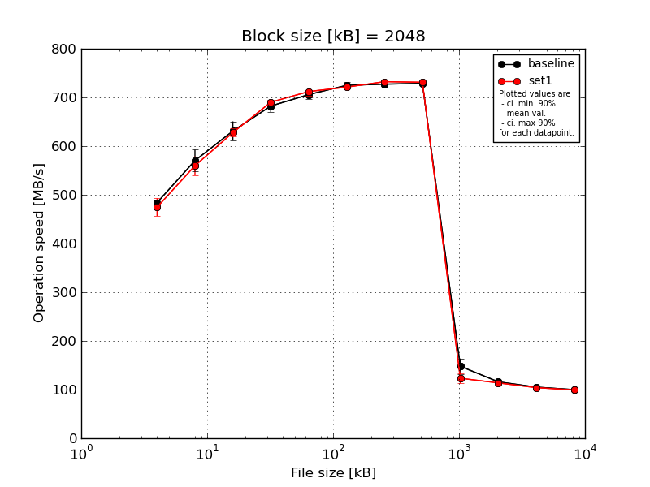
|
Block size [kB] |
File size [kB] |
| 2048 |
4096 |
8192 |
16384 |
32768 |
65536 |
131072 |
262144 |
524288 |
1048576 |
2097152 |
4194304 |
| baseline | 2048 | 488.77 | 587.3 | 644.07 | 694.18 | 709.28 | 726.34 | 734.11 | 731.51 | 121.74 | 114.34 | 104.46 | 100.09 |
| 2048 | 486.02 | 529.94 | 652.2 | 696.01 | 713.26 | 730.99 | 722.2 | 728.73 | 162.52 | 114.17 | 105.74 | 100.33 |
| 2048 | 487.54 | 583.76 | 639.58 | 681.75 | 689.64 | 726.04 | 723.58 | 728.46 | 160.24 | 116.09 | 104.65 | 99.79 |
| 2048 | 478.34 | 570.7 | 602.0 | 668.03 | 704.8 | 713.89 | 719.7 | 724.8 | 153.17 | 118.51 | 105.33 | 99.67 |
| 2048 | 478.92 | 579.63 | 617.33 | 671.26 | 712.13 | 726.76 | 736.6 | 730.17 | 141.96 | 117.09 | 105.4 | 99.74 |
| mean val. |
483.92 |
570.26 |
631.04 |
682.24 |
705.82 |
724.8 |
727.24 |
728.73 |
147.93 |
116.04 |
105.12 |
99.92 |
| standard dev. |
4.93 |
23.38 |
20.75 |
12.8 |
9.62 |
6.42 |
7.59 |
2.51 |
16.68 |
1.84 |
0.54 |
0.28 |
| ci. min. 90% |
479.22 |
547.97 |
611.26 |
670.04 |
696.65 |
718.68 |
720.0 |
726.34 |
132.02 |
114.28 |
104.6 |
99.66 |
| ci. max 90% |
488.62 |
592.55 |
650.82 |
694.44 |
714.99 |
730.93 |
734.47 |
731.13 |
163.83 |
117.8 |
105.63 |
100.19 |
| geom. mean |
483.9 |
569.87 |
630.76 |
682.15 |
705.77 |
724.78 |
727.21 |
728.73 |
147.13 |
116.03 |
105.12 |
99.92 |
| median |
486.02 |
579.63 |
639.58 |
681.75 |
709.28 |
726.34 |
723.58 |
728.73 |
153.17 |
116.09 |
105.33 |
99.79 |
| first quartile |
478.92 |
570.7 |
617.33 |
671.26 |
704.8 |
726.04 |
722.2 |
728.46 |
141.96 |
114.34 |
104.65 |
99.74 |
| third quartile |
487.54 |
583.76 |
644.07 |
694.18 |
712.13 |
726.76 |
734.11 |
730.17 |
160.24 |
117.09 |
105.4 |
100.09 |
| minimum |
478.34 |
529.94 |
602.0 |
668.03 |
689.64 |
713.89 |
719.7 |
724.8 |
121.74 |
114.17 |
104.46 |
99.67 |
| maximum |
488.77 |
587.3 |
652.2 |
696.01 |
713.26 |
730.99 |
736.6 |
731.51 |
162.52 |
118.51 |
105.74 |
100.33 |
| set1 | 2048 | 498.85 | 583.09 | 629.77 | 689.75 | 718.88 | 721.34 | 739.82 | 730.96 | 103.59 | 112.61 | 103.99 | 99.28 |
| 2048 | 486.16 | 538.22 | 615.96 | 684.44 | 705.98 | 723.18 | 730.83 | 731.74 | 129.14 | 111.93 | 104.76 | 98.91 |
| 2048 | 460.31 | 569.96 | 622.48 | 697.41 | 722.59 | 721.72 | 730.52 | 730.37 | 127.15 | 113.84 | 104.41 | 99.25 |
| 2048 | 451.68 | 568.11 | 638.16 | 685.46 | 703.48 | 718.41 | 727.99 | 729.61 | 126.61 | 117.62 | 103.13 | 99.42 |
| 2048 | 475.74 | 539.45 | 632.32 | 693.9 | 709.33 | 720.84 | 732.53 | 732.69 | 130.03 | 112.87 | 103.82 | 99.26 |
| mean val. |
474.55 |
559.76 |
627.74 |
690.19 |
712.05 |
721.1 |
732.34 |
731.07 |
123.3 |
113.77 |
104.02 |
99.22 |
| standard dev. |
19.06 |
19.97 |
8.66 |
5.51 |
8.3 |
1.73 |
4.49 |
1.19 |
11.11 |
2.25 |
0.62 |
0.19 |
| ci. min. 90% |
456.38 |
540.73 |
619.48 |
684.94 |
704.14 |
719.44 |
728.06 |
729.94 |
112.71 |
111.62 |
103.43 |
99.04 |
| ci. max 90% |
492.72 |
578.8 |
635.99 |
695.45 |
719.96 |
722.75 |
736.62 |
732.21 |
133.89 |
115.92 |
104.61 |
99.4 |
| geom. mean |
474.24 |
559.48 |
627.69 |
690.17 |
712.01 |
721.1 |
732.33 |
731.07 |
122.87 |
113.76 |
104.02 |
99.22 |
| median |
475.74 |
568.11 |
629.77 |
689.75 |
709.33 |
721.34 |
730.83 |
730.96 |
127.15 |
112.87 |
103.99 |
99.26 |
| first quartile |
460.31 |
539.45 |
622.48 |
685.46 |
705.98 |
720.84 |
730.52 |
730.37 |
126.61 |
112.61 |
103.82 |
99.25 |
| third quartile |
486.16 |
569.96 |
632.32 |
693.9 |
718.88 |
721.72 |
732.53 |
731.74 |
129.14 |
113.84 |
104.41 |
99.28 |
| minimum |
451.68 |
538.22 |
615.96 |
684.44 |
703.48 |
718.41 |
727.99 |
729.61 |
103.59 |
111.93 |
103.13 |
98.91 |
| maximum |
498.85 |
583.09 |
638.16 |
697.41 |
722.59 |
723.18 |
739.82 |
732.69 |
130.03 |
117.62 |
104.76 |
99.42 |
| baseline set1 difference |
-1.94 % |
-1.84 % |
-0.52 % |
1.16 % |
0.88 % |
-0.51 % |
0.7 % |
0.32 % |
-16.65 % |
-1.96 % |
-1.04 % |
-0.7 % |
| ttest p-value |
0.3182 |
0.467 |
0.751 |
0.238 |
0.3047 |
0.2484 |
0.2318 |
0.0967 |
0.0252 |
0.1197 |
0.0173 |
0.0016 |
| ttest equality |
SAME |
SAME |
SAME |
SAME |
SAME |
SAME |
SAME |
DIFF |
DIFF |
SAME |
DIFF |
DIFF |
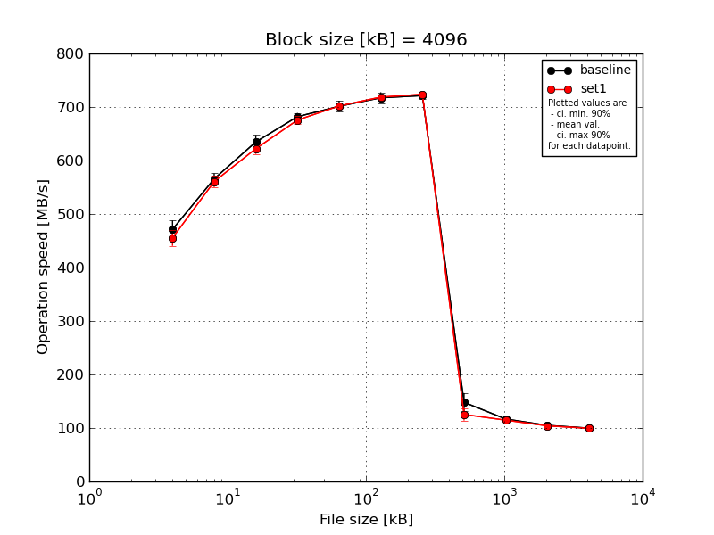
|
Block size [kB] |
File size [kB] |
| 4096 |
8192 |
16384 |
32768 |
65536 |
131072 |
262144 |
524288 |
1048576 |
2097152 |
4194304 |
| baseline | 4096 | 496.77 | 573.48 | 653.27 | 678.35 | 705.58 | 715.39 | 725.9 | 118.47 | 115.79 | 104.57 | 99.66 |
| 4096 | 474.06 | 557.22 | 641.54 | 694.25 | 715.68 | 729.51 | 727.34 | 158.54 | 116.2 | 105.42 | 99.86 |
| 4096 | 470.04 | 557.64 | 634.95 | 680.24 | 687.68 | 711.1 | 718.81 | 159.6 | 117.51 | 103.83 | 99.95 |
| 4096 | 467.72 | 559.51 | 621.07 | 675.37 | 693.88 | 703.37 | 712.62 | 159.87 | 118.2 | 105.38 | 99.81 |
| 4096 | 448.23 | 580.59 | 622.74 | 681.47 | 703.72 | 726.41 | 721.95 | 143.79 | 116.47 | 105.69 | 99.7 |
| mean val. |
471.36 |
565.69 |
634.71 |
681.94 |
701.31 |
717.16 |
721.32 |
148.06 |
116.83 |
104.98 |
99.8 |
| standard dev. |
17.34 |
10.69 |
13.42 |
7.26 |
10.86 |
10.82 |
5.91 |
17.86 |
1.0 |
0.77 |
0.12 |
| ci. min. 90% |
454.83 |
555.49 |
621.92 |
675.02 |
690.96 |
706.84 |
715.69 |
131.02 |
115.88 |
104.25 |
99.68 |
| ci. max 90% |
487.9 |
575.88 |
647.51 |
688.86 |
711.66 |
727.47 |
726.95 |
165.09 |
117.78 |
105.71 |
99.91 |
| geom. mean |
471.11 |
565.61 |
634.6 |
681.91 |
701.24 |
717.09 |
721.3 |
147.12 |
116.83 |
104.98 |
99.8 |
| median |
470.04 |
559.51 |
634.95 |
680.24 |
703.72 |
715.39 |
721.95 |
158.54 |
116.47 |
105.38 |
99.81 |
| first quartile |
467.72 |
557.64 |
622.74 |
678.35 |
693.88 |
711.1 |
718.81 |
143.79 |
116.2 |
104.57 |
99.7 |
| third quartile |
474.06 |
573.48 |
641.54 |
681.47 |
705.58 |
726.41 |
725.9 |
159.6 |
117.51 |
105.42 |
99.86 |
| minimum |
448.23 |
557.22 |
621.07 |
675.37 |
687.68 |
703.37 |
712.62 |
118.47 |
115.79 |
103.83 |
99.66 |
| maximum |
496.77 |
580.59 |
653.27 |
694.25 |
715.68 |
729.51 |
727.34 |
159.87 |
118.2 |
105.69 |
99.95 |
| set1 | 4096 | 461.84 | 548.03 | 616.8 | 681.28 | 704.04 | 716.41 | 726.54 | 105.37 | 113.65 | 103.88 | 99.1 |
| 4096 | 447.93 | 556.51 | 610.71 | 673.82 | 700.82 | 710.63 | 719.91 | 129.17 | 114.83 | 105.25 | 99.43 |
| 4096 | 432.38 | 555.1 | 620.22 | 683.92 | 704.26 | 725.34 | 727.04 | 126.4 | 112.0 | 103.87 | 99.31 |
| 4096 | 461.68 | 568.47 | 638.44 | 665.2 | 704.79 | 720.85 | 722.47 | 128.75 | 118.99 | 103.39 | 99.5 |
| 4096 | 472.99 | 574.8 | 624.34 | 673.61 | 695.79 | 719.4 | 722.98 | 136.76 | 113.98 | 103.83 | 99.53 |
| mean val. |
455.36 |
560.58 |
622.1 |
675.57 |
701.94 |
718.53 |
723.79 |
125.29 |
114.69 |
104.04 |
99.37 |
| standard dev. |
15.62 |
10.82 |
10.41 |
7.36 |
3.77 |
5.46 |
2.98 |
11.8 |
2.61 |
0.7 |
0.17 |
| ci. min. 90% |
440.47 |
550.26 |
612.18 |
668.55 |
698.34 |
713.32 |
720.95 |
114.04 |
112.2 |
103.37 |
99.21 |
| ci. max 90% |
470.25 |
570.9 |
632.03 |
682.59 |
705.54 |
723.74 |
726.63 |
136.54 |
117.18 |
104.71 |
99.54 |
| geom. mean |
455.15 |
560.5 |
622.03 |
675.54 |
701.93 |
718.51 |
723.78 |
124.81 |
114.67 |
104.04 |
99.37 |
| median |
461.68 |
556.51 |
620.22 |
673.82 |
704.04 |
719.4 |
722.98 |
128.75 |
113.98 |
103.87 |
99.43 |
| first quartile |
447.93 |
555.1 |
616.8 |
673.61 |
700.82 |
716.41 |
722.47 |
126.4 |
113.65 |
103.83 |
99.31 |
| third quartile |
461.84 |
568.47 |
624.34 |
681.28 |
704.26 |
720.85 |
726.54 |
129.17 |
114.83 |
103.88 |
99.5 |
| minimum |
432.38 |
548.03 |
610.71 |
665.2 |
695.79 |
710.63 |
719.91 |
105.37 |
112.0 |
103.39 |
99.1 |
| maximum |
472.99 |
574.8 |
638.44 |
683.92 |
704.79 |
725.34 |
727.04 |
136.76 |
118.99 |
105.25 |
99.53 |
| baseline set1 difference |
-3.39 % |
-0.9 % |
-1.99 % |
-0.93 % |
0.09 % |
0.19 % |
0.34 % |
-15.38 % |
-1.83 % |
-0.89 % |
-0.42 % |
| ttest p-value |
0.1638 |
0.4744 |
0.1355 |
0.2055 |
0.9053 |
0.8064 |
0.4288 |
0.0447 |
0.1249 |
0.079 |
0.002 |
| ttest equality |
SAME |
SAME |
SAME |
SAME |
SAME |
SAME |
SAME |
DIFF |
SAME |
DIFF |
DIFF |
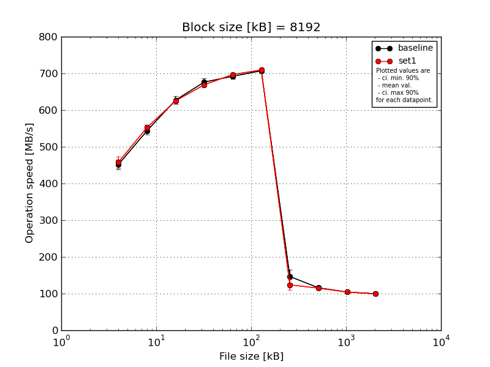
|
Block size [kB] |
File size [kB] |
| 8192 |
16384 |
32768 |
65536 |
131072 |
262144 |
524288 |
1048576 |
2097152 |
4194304 |
| baseline | 8192 | 461.57 | 560.18 | 636.27 | 666.07 | 697.38 | 712.18 | 115.01 | 112.98 | 104.32 | 99.86 |
| 8192 | 439.63 | 545.69 | 637.34 | 684.78 | 688.1 | 710.56 | 157.81 | 115.63 | 103.52 | 99.36 |
| 8192 | 463.88 | 543.74 | 627.56 | 688.43 | 690.9 | 705.7 | 160.46 | 116.76 | 103.61 | 99.32 |
| 8192 | 434.52 | 534.79 | 610.23 | 663.76 | 683.13 | 699.5 | 157.93 | 119.71 | 105.35 | 99.78 |
| 8192 | 458.43 | 534.65 | 624.46 | 678.58 | 700.79 | 708.09 | 141.49 | 114.31 | 104.52 | 99.89 |
| mean val. |
451.61 |
543.81 |
627.17 |
676.32 |
692.06 |
707.21 |
146.54 |
115.88 |
104.26 |
99.64 |
| standard dev. |
13.53 |
10.45 |
10.96 |
11.03 |
7.09 |
4.96 |
19.17 |
2.57 |
0.75 |
0.28 |
| ci. min. 90% |
438.71 |
533.85 |
616.72 |
665.81 |
685.3 |
702.48 |
128.26 |
113.43 |
103.55 |
99.38 |
| ci. max 90% |
464.5 |
553.77 |
637.62 |
686.84 |
698.82 |
711.93 |
164.81 |
118.33 |
104.97 |
99.91 |
| geom. mean |
451.44 |
543.73 |
627.1 |
676.25 |
692.03 |
707.19 |
145.44 |
115.86 |
104.26 |
99.64 |
| median |
458.43 |
543.74 |
627.56 |
678.58 |
690.9 |
708.09 |
157.81 |
115.63 |
104.32 |
99.78 |
| first quartile |
439.63 |
534.79 |
624.46 |
666.07 |
688.1 |
705.7 |
141.49 |
114.31 |
103.61 |
99.36 |
| third quartile |
461.57 |
545.69 |
636.27 |
684.78 |
697.38 |
710.56 |
157.93 |
116.76 |
104.52 |
99.86 |
| minimum |
434.52 |
534.65 |
610.23 |
663.76 |
683.13 |
699.5 |
115.01 |
112.98 |
103.52 |
99.32 |
| maximum |
463.88 |
560.18 |
637.34 |
688.43 |
700.79 |
712.18 |
160.46 |
119.71 |
105.35 |
99.89 |
| set1 | 8192 | 455.81 | 550.53 | 628.56 | 670.05 | 699.77 | 714.46 | 104.7 | 111.52 | 103.96 | 99.38 |
| 8192 | 433.53 | 547.72 | 627.5 | 664.57 | 700.77 | 704.8 | 124.37 | 114.11 | 105.96 | 99.42 |
| 8192 | 472.59 | 566.59 | 621.54 | 673.08 | 690.65 | 709.74 | 124.55 | 114.16 | 104.14 | 99.7 |
| 8192 | 473.73 | 546.99 | 624.66 | 668.16 | 694.56 | 706.91 | 118.69 | 119.82 | 103.82 | 99.97 |
| 8192 | 454.91 | 551.13 | 623.11 | 668.38 | 699.29 | 711.25 | 146.92 | 114.6 | 103.74 | 99.89 |
| mean val. |
458.11 |
552.59 |
625.07 |
668.85 |
697.01 |
709.43 |
123.85 |
114.84 |
104.32 |
99.67 |
| standard dev. |
16.38 |
8.02 |
2.94 |
3.1 |
4.28 |
3.76 |
15.22 |
3.04 |
0.93 |
0.27 |
| ci. min. 90% |
442.5 |
544.94 |
622.27 |
665.9 |
692.92 |
705.85 |
109.34 |
111.95 |
103.44 |
99.42 |
| ci. max 90% |
473.73 |
560.24 |
627.88 |
671.8 |
701.09 |
713.02 |
138.35 |
117.74 |
105.21 |
99.93 |
| geom. mean |
457.88 |
552.55 |
625.07 |
668.84 |
697.0 |
709.42 |
123.11 |
114.81 |
104.32 |
99.67 |
| median |
455.81 |
550.53 |
624.66 |
668.38 |
699.29 |
709.74 |
124.37 |
114.16 |
103.96 |
99.7 |
| first quartile |
454.91 |
547.72 |
623.11 |
668.16 |
694.56 |
706.91 |
118.69 |
114.11 |
103.82 |
99.42 |
| third quartile |
472.59 |
551.13 |
627.5 |
670.05 |
699.77 |
711.25 |
124.55 |
114.6 |
104.14 |
99.89 |
| minimum |
433.53 |
546.99 |
621.54 |
664.57 |
690.65 |
704.8 |
104.7 |
111.52 |
103.74 |
99.38 |
| maximum |
473.73 |
566.59 |
628.56 |
673.08 |
700.77 |
714.46 |
146.92 |
119.82 |
105.96 |
99.97 |
| baseline set1 difference |
1.44 % |
1.62 % |
-0.33 % |
-1.11 % |
0.72 % |
0.31 % |
-15.49 % |
-0.89 % |
0.06 % |
0.03 % |
| ttest p-value |
0.5126 |
0.1744 |
0.6901 |
0.1826 |
0.2185 |
0.4469 |
0.0719 |
0.576 |
0.9127 |
0.8623 |
| ttest equality |
SAME |
SAME |
SAME |
SAME |
SAME |
SAME |
DIFF |
SAME |
SAME |
SAME |
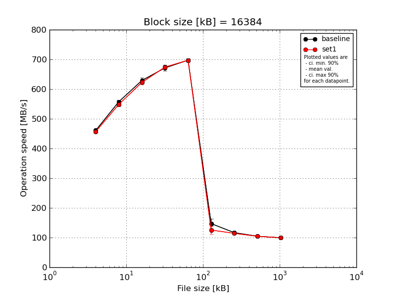
|
Block size [kB] |
File size [kB] |
| 16384 |
32768 |
65536 |
131072 |
262144 |
524288 |
1048576 |
2097152 |
4194304 |
| baseline | 16384 | 465.7 | 559.78 | 618.84 | 668.27 | 698.85 | 120.79 | 115.32 | 103.66 | 99.23 |
| 16384 | 457.6 | 556.88 | 634.19 | 685.12 | 697.36 | 151.85 | 115.58 | 104.73 | 99.75 |
| 16384 | 463.71 | 564.38 | 641.21 | 665.19 | 703.02 | 167.32 | 116.11 | 105.03 | 99.8 |
| 16384 | 457.53 | 547.63 | 621.11 | 658.2 | 688.45 | 155.67 | 119.55 | 104.95 | 99.52 |
| 16384 | 459.64 | 558.21 | 630.19 | 680.3 | 699.23 | 140.19 | 117.04 | 104.99 | 100.11 |
| mean val. |
460.84 |
557.38 |
629.11 |
671.42 |
697.38 |
147.16 |
116.72 |
104.67 |
99.68 |
| standard dev. |
3.7 |
6.14 |
9.26 |
11.07 |
5.41 |
17.64 |
1.71 |
0.58 |
0.33 |
| ci. min. 90% |
457.31 |
551.53 |
620.28 |
660.86 |
692.22 |
130.34 |
115.09 |
104.12 |
99.37 |
| ci. max 90% |
464.36 |
563.23 |
637.94 |
681.97 |
702.54 |
163.98 |
118.35 |
105.22 |
99.99 |
| geom. mean |
460.82 |
557.35 |
629.05 |
671.34 |
697.36 |
146.28 |
116.71 |
104.67 |
99.68 |
| median |
459.64 |
558.21 |
630.19 |
668.27 |
698.85 |
151.85 |
116.11 |
104.95 |
99.75 |
| first quartile |
457.6 |
556.88 |
621.11 |
665.19 |
697.36 |
140.19 |
115.58 |
104.73 |
99.52 |
| third quartile |
463.71 |
559.78 |
634.19 |
680.3 |
699.23 |
155.67 |
117.04 |
104.99 |
99.8 |
| minimum |
457.53 |
547.63 |
618.84 |
658.2 |
688.45 |
120.79 |
115.32 |
103.66 |
99.23 |
| maximum |
465.7 |
564.38 |
641.21 |
685.12 |
703.02 |
167.32 |
119.55 |
105.03 |
100.11 |
| set1 | 16384 | 457.73 | 554.05 | 630.36 | 672.81 | 701.77 | 106.1 | 112.67 | 103.93 | 99.39 |
| 16384 | 452.24 | 550.59 | 610.59 | 666.25 | 692.07 | 128.27 | 114.94 | 106.05 | 99.42 |
| 16384 | 459.03 | 554.16 | 619.58 | 677.01 | 694.78 | 124.18 | 112.96 | 103.79 | 99.78 |
| 16384 | 455.45 | 539.08 | 627.13 | 681.71 | 699.32 | 123.81 | 119.39 | 103.46 | 99.56 |
| 16384 | 459.94 | 544.16 | 625.24 | 672.27 | 698.88 | 144.69 | 111.81 | 104.12 | 99.63 |
| mean val. |
456.88 |
548.41 |
622.58 |
674.01 |
697.36 |
125.41 |
114.36 |
104.27 |
99.56 |
| standard dev. |
3.09 |
6.61 |
7.76 |
5.76 |
3.88 |
13.76 |
3.04 |
1.02 |
0.16 |
| ci. min. 90% |
453.93 |
542.11 |
615.18 |
668.51 |
693.66 |
112.29 |
111.46 |
103.29 |
99.41 |
| ci. max 90% |
459.83 |
554.71 |
629.98 |
679.5 |
701.06 |
138.53 |
117.25 |
105.25 |
99.71 |
| geom. mean |
456.87 |
548.38 |
622.54 |
673.99 |
697.35 |
124.8 |
114.32 |
104.27 |
99.56 |
| median |
457.73 |
550.59 |
625.24 |
672.81 |
698.88 |
124.18 |
112.96 |
103.93 |
99.56 |
| first quartile |
455.45 |
544.16 |
619.58 |
672.27 |
694.78 |
123.81 |
112.67 |
103.79 |
99.42 |
| third quartile |
459.03 |
554.05 |
627.13 |
677.01 |
699.32 |
128.27 |
114.94 |
104.12 |
99.63 |
| minimum |
452.24 |
539.08 |
610.59 |
666.25 |
692.07 |
106.1 |
111.81 |
103.46 |
99.39 |
| maximum |
459.94 |
554.16 |
630.36 |
681.71 |
701.77 |
144.69 |
119.39 |
106.05 |
99.78 |
| baseline set1 difference |
-0.86 % |
-1.61 % |
-1.04 % |
0.39 % |
-0.0 % |
-14.78 % |
-2.03 % |
-0.38 % |
-0.13 % |
| ttest p-value |
0.1039 |
0.0569 |
0.2614 |
0.6547 |
0.9955 |
0.0614 |
0.1682 |
0.4695 |
0.4664 |
| ttest equality |
SAME |
DIFF |
SAME |
SAME |
SAME |
DIFF |
SAME |
SAME |
SAME |